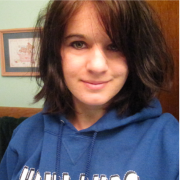
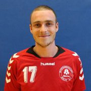

-
Philipp Wolf
Philipp Wolf ist 18 Jahre alt und lebt in seiner Geburtsstadt Berlin. Er ist bekennender Spieleenthusiast und Otaku und interessiert sich für alles was auch nur ansatzweise in den Bereich Anime bis Brettspiel fällt. Abgesehen von seinem noch relativ frischen Weblog, betreibt er seid 3 Jahren einen Let’s Play Kanal auf YouTube. Wenn er nicht gerade auf irgendeinem TeamSpeak Server herumlungert oder in einer Skype Konferenz stört, trifft er sich mit Freunden zum Brettspielabend. Bei Gelegenheit ist er auch auf einem der Städtischen Volleyballfelder anzufinden, wo er zugegebener maßen schon früher war, als er laufen konnte.
Neben der allgemeinen Nerdigkeit studiert er gerade an der HTW Berlin im internationalen(!!!) Studiengang Medieninformatik. Nach einem erfolgreichem Abschluss erhofft er sich einmal den Einstieg in die Spielebranche zu finden, um einmal seine Begeisterung zum Beruf machen zu können.
-
Jennifer Lindner
Jennifer Lindner, 19 Jahre, kommt aus einem kleinen Dorf in Brandenburg. Trotz einer wirklich schlechten Netzabdeckung, die den Internetzugang auf ein Minimum beschränkt, hat sie dennoch schon früh Interesse an jenem Medium gefunden und nutzt seither jeden Bit um dieses und jenes zu recherchieren. In ihrem Interessengebiet liegen vor allem TV-Serien, Filme sowie die Schauspieler ihrer Lieblingscharaktere. Zu ihren Stärken zählen der Umgang mit sämtlichen sozialen Netzwerken, wie Facebook, Tumblr und You Tube.
Da Programmieren schon im Informatikunterricht zu den spaßigsten Aktivitäten, neben dem Kunstunterricht, zählte entschied sie sich dafür beides zu verbinden und den internationalen Studiengang Medieninformatik an der HTW zu besuchen. Wenn die Hausaufgaben nicht jegliche Freizeit rauben geht sie auch ihren anderen Hobbies, Fotografie und Malerei, nach.
Mit dem Abschluss des Studiums, als Bachelor oder Master, erhofft sie sich ihren Stars so nah wie möglich zu kommen und in einem Film- oder Fernsehstudio eine Anstellung zu finden.
-
Karolin Hupfer
Karolin ist 23 Jahre alt und studiert Wirtschaftskommunikation im 6. Semester. Ihr Fokus liegt hierben neben der Kommunikation auf Grafik, Fotografie und AV-Medien. In ihrer Werkstudententätigkeit produziert sie Videos und fotografiert Produkte eines Online-Handels.
In Agenturen arbeitete sie schon oft mit Content-Management Systemen und war schon immer sehr daran interessiert was dahinter steckt. Da Informatik kein Teil ihres eigentlichen Studiums ist belegt sie Module aus dem Studiengang Internationale Medieninfomrmatik.
In ihrer Freizeit liebt Karolin das Reisen, ist gerne mit Freunden unterwegs und macht Sport wie Snowboard, Surfen und Turnen.
-
Daniil Stepanov
Daniil Stepanov ist 26 Jahre alt und kommt aus Russland. Er wohnt in Berlin seit August 2014. Er hat schon ein erstes Studium absolviert und seit dem arbeitet er als selbständiger Journalist.
Er hat schon Erfahrungen mit Webprogrammierung gesammelt, dies ist aber schon 10 Jahre her. Daniil findet HTML 5 ganz gut, weil es mehr systematisch als vorherige Versionen ist.
In Freizeit liebt er lesen and schaut gerne neue TV-serien.
-
Phillip Trautmann
Ich bin 21 Jahre alt und komme aus dem schönsten Teil von Brandenburg namens Spreewald. Da wo man Kanäle und giftgrüne Gurken findet, bin ich zuhause. Alleen soweit das Auge reicht und wenn man nur lange genug mit dem Fahrrad unterwegs ist, findet man im Sommer immer noch ein Baggersee... Ein Traum!
Vor 3 Jahren bin ich aus der Dorfidylle in das schöne Berlin geflüchtet. Hier habe ich eine Ausbildung bei der Telekom absolviert und versuche mich jetzt im Studiengang der Medieninformatik. Mein Auslandsemester soll in Mexiko über die Bühne gehen (: Ein kleiner Vorgeschmack